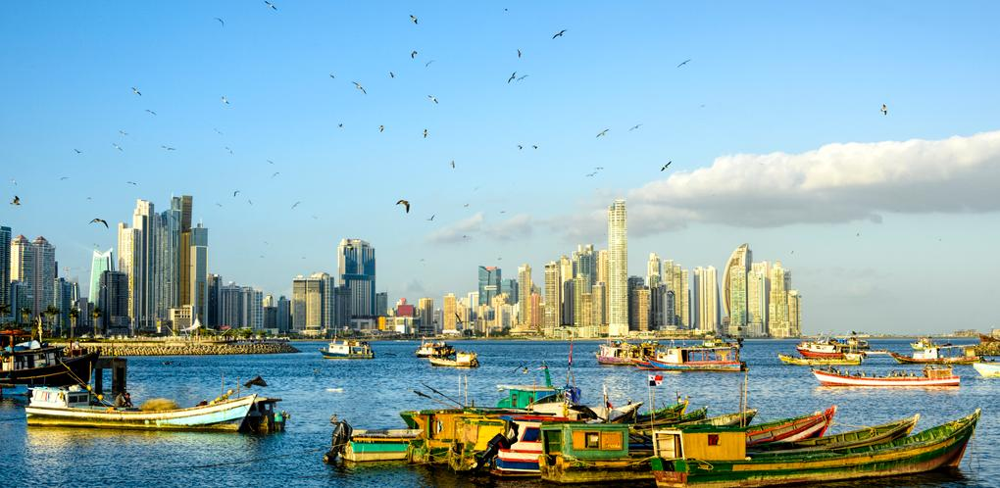

Top 5 affordable countries to live in
5. Thailand

Known for its low costs, especially for food and housing, it's a popular choice for expats seeking a good quality of life at an affordable price
4. Panama

Provides a balance of low costs and financial opportunities, making it attractive for expats.
3. Indonesia
Another highly affordable destination, offering low costs of living.
2. Colombia

omes in second for affordability, particularly for expats
1. Vietnam

Consistently ranked as one of the most affordable places to live, offering very low food and accommodation costs.